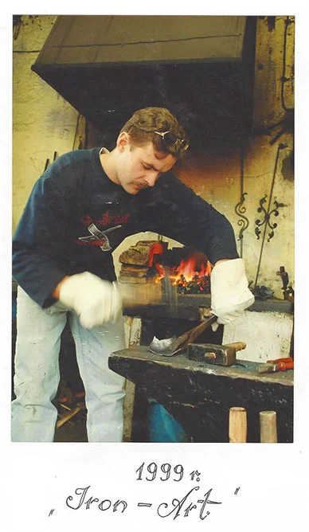

Siła czy finezja, a może jedno i drugie razem?
Kowalstwo artystyczne firmy "Iron-Art" jest próbą połączenia obu tych - wydawać by się mogło - zupełnie odrębnych rzemiosł, lecz łączy je, najogólniej rzecz biorąc, słowo… metaloplastyka.
Inspiruje nas secesja i wszystko, co z nią związane, dlatego często nasze wyroby cechuje nuta Art Nouveau.
Czy nam się to udało... ? Oceńcie Państwo sami.
Wykonujemy balustrady kute schodowe wewnętrzne, nowoczesne i stylizowane barierki schodowe i balkonowe, drewniano-metalowe pochwyty i poręcze stalowe, a także meble kute do pokoju i przedpokoju.
Historia firmy

Historia naszej firmy rozpoczęła się jeszcze przed II wojną światową i sięga aż czterech pokoleń.Wszystko zaczęło się od mojego dziadka, który nauczył się zawodu kowala od swojego wuja, a następnie przekazał tę wiedzę swoim synom.
Po 40 latach mój ojciec powróciwszy do kowalstwa, otworzył w Łodzi kuźnię, którą obecnie z wielkim zaangażowaniem i pasją prowadzę ja.
Kowalstwo artystyczne Łódź - Maciej Kozubal
Zawód metaloplastyka otworzył się przede mną po ukończeniu Państwowego Liceum Sztuk Plastycznych, po którym otrzymałem tytuł Technika Sztuk Plastycznych w zakresie wyrobów artystycznych, ze specjalizacją metaloplastyki. Moim kierunkiem przodującym było kowalstwo artystyczne.
W swoją pracę wkładam dużo serca i cierpliwości. Moje wyroby są efektem precyzji, pasji i poświęcenia. Ponadto często wykorzystuję elementy zdobieniowe, dobierane indywidualnie do każdego wyrobu. Dzięki zdobytemu doświadczeniu udało mi się połączyć kowalstwo artystyczne wraz z metaloplastyką kolorową. Swoją pracę traktuje jako hobby, które sprawia mi ogromną radość.
Proces tworzenia
Na początku tworzenia produktu, przygotowuję projekt wybranego modelu. Skupiam się przede wszystkim na balustradach: kutych, balustradach schodowych, balustradach wewnętrznych, barierkach, barierkach schodowych oraz meblach kutych. Swoje wyroby często oprawiam w kamienie półszlachetne. Ponadto balustrady, barierki i meble posrebrzam, pozłacam lub miedziuję. W zakres mebli kutych wchodzą między innymi ławy, stoliki i stoliczki oraz wieszaki. Moje wyroby nawiązują do architektury okresu secesji oraz ArtDeco, co oznacza, że są one bogato i precyzyjnie zdobione. W swojej twórczości łączę kowalstwo artystyczne z metaloplastyką kolorową w jedną spójną całość.
Produktem szczególnie wyjątkowym są balustrady, ponieważ ich duże gabaryty pozwalają dokładnie ukazać piękne zdobienia.
Poza artystycznymi wyrobami zajmujemy się także prostszymi pracami, które są uboższe w formie, lecz dostosowane do wymagań i potrzeb indywidualnych. Meble kute, balustrady, wieszaki tworzone pod wymiar dzięki ręcznemu wykonaniu nadają wnętrzom niepowtarzalny klimat.
Zapraszamy serdecznie do naszej pracowni Kowalstwa Artystycznego Iron-Art Łódź. Polecamy zapoznać się z naszymi wyrobami, balustradami kutymi wewnętrznymi i projektami z działu metaloplastyki!
Technik Sztuk Plastycznych i Wyrobów Artystycznych, Mistrz Jubiler
Unikalne balustrady kute wewnętrzne
Balustrady kute wewnętrzne tworzone ręcznie w naszej pracowni kowalstwa artystycznego w Łodzi, to wyjątkowe dzieła sztuki rzemieślniczej, które łączą w sobie funkcjonalność z estetyką. Ich unikalność tkwi w precyzyjnym wykonaniu i dbałości o detale, które są rezultatem pracy doświadczonego kowala.
Każda balustrada schodowa jest jedyna w swoim rodzaju, odzwierciedlając indywidualne gusta i potrzeby klienta. Tradycyjne techniki kowalstwa artystycznego, używane do ich wyrobu produktów, nadają im niepowtarzalny charakter i trwałość, czyniąc je inwestycją na lata.
Kute balustrady wewnętrzne dodają wnętrzom elegancji i klasy, stając się centralnym punktem aranżacji, który przyciąga wzrok i zachwyca detalami.
Kowalstwo Artystyczne - Specyfikacja pracy
- Nasze wyroby są wykonane w sposób precyzyjny, z uwzględnieniem najdrobniejszych szczegółów. Przykładamy wielką wagę do obróbki łączeń materiałów, aby całość prezentowała się w sposób estetyczny.
- Każdy produkt wykonywany w pracowni kowalstwa artystycznego Iron-Art, jest wykuwany ręcznie przez kowala z wieloletnim doświadczeniem w tej dziedzinie oraz wykwalifikowanych pracowników.
- Zapewniamy indywidualne i priorytetowe podejście do każdego zlecenia. Oferujemy także pomoc i doradztwo podczas wyboru projektów, kolorów, materiałów.
- W ramach naszej oferty zapewniamy Klientom możliwość zamówienia odlewanych lub kutych elementów mosiężnych.
- Oferujemy patynowanie stali, zarówno całej powierzchni przedmiotu, jak i tylko delikatnych przetarć na wybranych elementach.
- Pokrywamy stal galwanicznie powłokami niklu, mosiądzu lub chromu, a także srebra lub złota.
- Każdy wyrób zabezpieczamy produktami antykorozyjnymi, dzięki czemu przedłużamy ich żywotność i estetykę.
- Nasze wyroby są cynkowane ogniowo, aby uchronić je przed korozją i zapewnić im efektowny wygląd na długie lata.
- W ramach oferty wykonujemy odlewy z żeliwa, staliwa oraz aluminium.
- Oferujemy możliwość wykorzystania gotowych projektów lub własnego pomysłu. Na życzenie Klienta zapewniamy możliwość przygotowania projektu indywidualnego, dopasowanego do potrzeb i oczekiwań.
- Specjalizujemy się w stylistyce z okresu secesyjnego, art deco, baroku, gotyku, ale zapewniamy możliwość wykorzystania również innych stylów architektonicznych.
- Zapewniamy możliwość zrealizowania nowoczesnych projektów według życzenia Klienta.